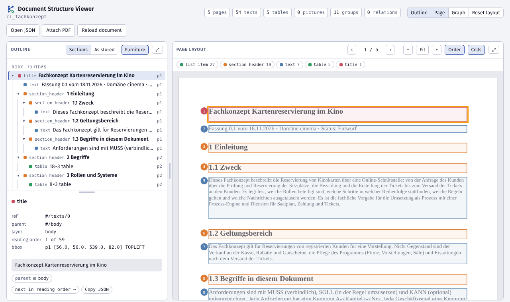
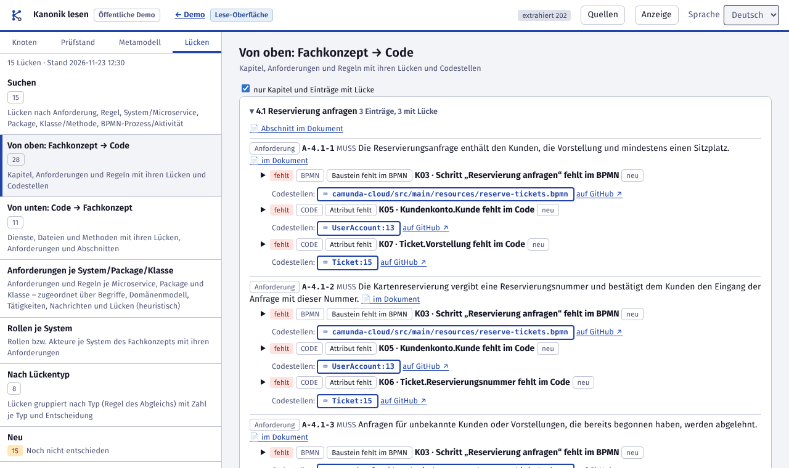
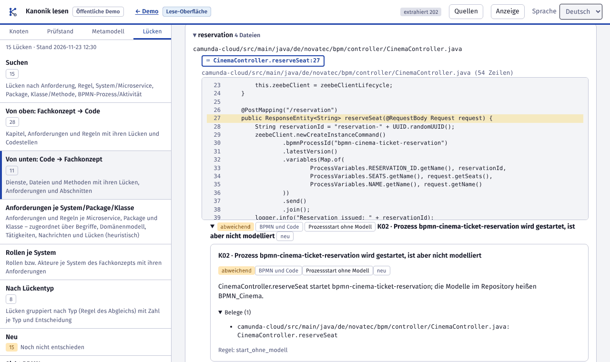
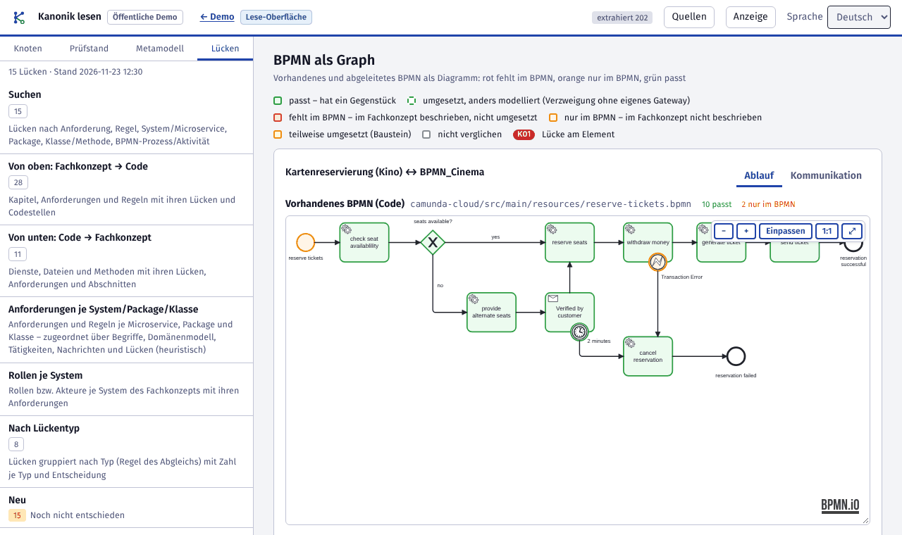
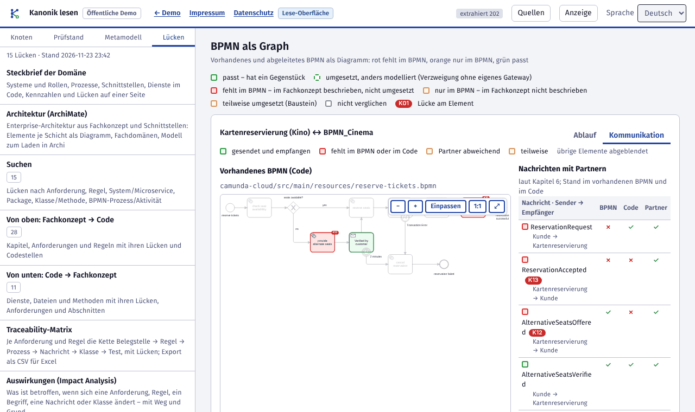
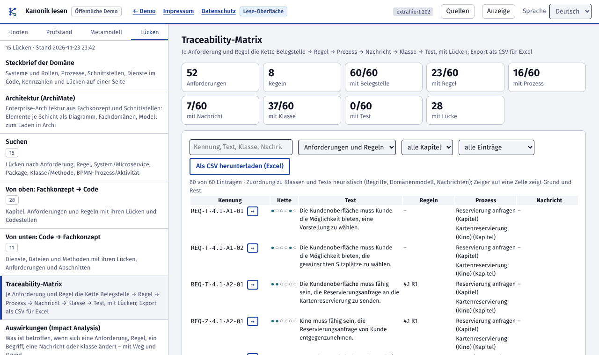
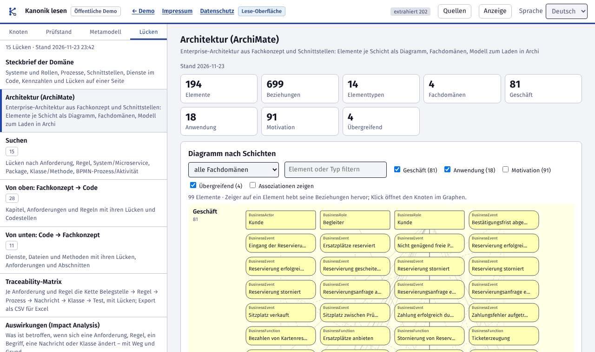

Kino: Kartenreservierung
Platzprüfung, Ersatzplätze, Zahlung und Ticketversand – Fachkonzept gegen Camunda-8-Prozess und Java-Code.
Steckbrief
Ganzer Steckbrief in der Lese-Oberfläche →
Wie dieses Beispiel entstand
Auswahl
Ein kleines, öffentlich verfügbares Projekt, das einen Geschäftsprozess wirklich als BPMN ausführt: camunda-platform-8-cinema von Novatec (Java, Spring Boot, Camunda 8). Ein Prozess mit Nachricht, Fehlerfall, Zeitgeber und Verzweigung – genug, um die Prozessseite des Abgleichs zu prüfen: BPMN lesen, Job-Worker und Nachrichten-Korrelation im Code finden.
Vorbereitung
Ein Fachkonzept gab es nicht. Wir haben es für diese Demo geschrieben, aus README und Prozessbild des Projekts: Rollen, Begriffe, Abläufe, Regeln, Anforderungen und eine Nachrichtentabelle. Dazu eine feste Fassung des Codes (Commit) und eine Liste der erwarteten Lücken als Testorakel. Die Extraktion durch ein Sprachmodell wurde geprüft und als übernommener Stand gespeichert; jeder weitere Lauf ist ohne Sprachmodell wiederholbar.
Was Kanonik gemacht hat
Kanonik hat das Fachkonzept in einen Wissensgraphen übersetzt (Begriffe, Rollen, Aktivitäten, Regeln, Anforderungen mit Belegstelle), daraus BPMN abgeleitet und den vorhandenen BPMN-Prozess sowie den Java-Code gelesen – Job-Worker, Nachrichten, REST-Endpunkte. Aus dem Code entstand eine OpenAPI-Beschreibung mit Verweis auf jede Codestelle. Der Abgleich der drei Sichten Fachkonzept ↔ BPMN ↔ Code ergibt die Lückenliste, gemessen am Testorakel.
Geführte Tour
- Das Fachkonzept
Kapitel 4 beschreibt den Hauptprozess der Kartenreservierung mit Anforderungen wie A-4.1-1. →
- Die Lücken
Der Abgleich findet unter anderem Nachrichten, die das Fachkonzept verlangt, die der Code aber nie sendet. →
- Vom Befund zur Stelle
Jede Anforderung in der Lückenliste öffnet das Fachkonzept an der Belegstelle. →
- BPMN als Graph
Das vorhandene BPMN neben dem aus dem Fachkonzept abgeleiteten: rot fehlt im Modell, orange gibt es nur im Modell, grün passt. →
- Kommunikation
Welche Nachricht laut Fachkonzept von wem an wen geht – und wo das Modell und der Code sie wirklich senden und empfangen. →
- Von der Anforderung bis zur Klasse
Die Traceability-Matrix zeigt je Anforderung die Kette Belegstelle → Regel → Prozess → Nachricht → Klasse → Test; ⇢ zeigt, was eine Änderung betrifft. →
- Architektur
Das ArchiMate-Modell der Domäne nach Schichten – zum Ansehen und als Datei für Archi. →
Fachkonzept ansehen
Lücken
17 Lücken zwischen Fachkonzept, BPMN und Code
Architektur (ArchiMate)
Enterprise-Architektur der Domäne nach ArchiMate 3.2, abgeleitet aus Fachkonzept und Schnittstellen: 194 Elemente, 699 Beziehungen.
Diagramm nach Schichten ansehen →
model.xml für Archi herunterladen (Datei → Importieren → Open Exchange XML Model)
Schnittstellen aus dem Code
Das Projekt hat keine Schnittstellenbeschreibung. Kanonik hat sie aus dem Quelltext erzeugt: OpenAPI für REST, AsyncAPI für Ereignisse und Nachrichten. Jedes Element verweist auf seine Codestelle (x-kanonik-code).
2 REST-Operationen, 0 Ereignis-Operationen, 0 Nachrichten →
Graph und Suche (Lese-Oberfläche)
Graph und Suche (Lese-Oberfläche) →
Quellen und Rechte
Fachkonzept für diese Demo geschrieben; Prozess und Code aus camunda-platform-8-cinema (Novatec, Apache-2.0).